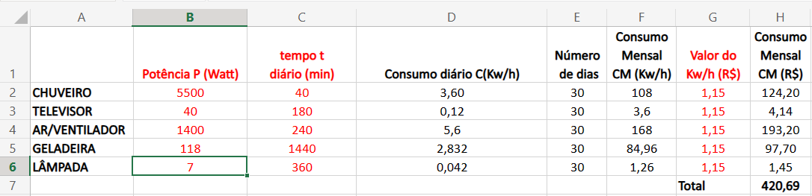
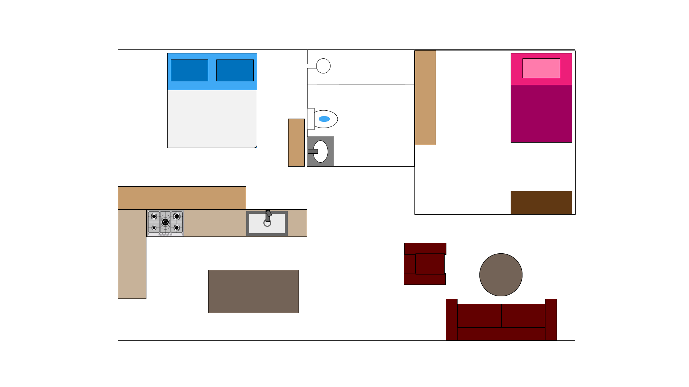

Planilha com os dados dos eletrodomésticos
Texto descritivo
O quadro acima apresenta valores do consumo de alguns eletrodomésticos, os itens dele são a potencia, o tempo e o consumo mensal em KW/h e em reais. Todos os equipamentos são usados todos os dias do mês.
A potência e o tempo de uso diário do chuveiro são respectivamente 5500KW/h e 40 minutos. Ele gasta 108KW/h e R$124,20 por mês
Já os valores do televisor são 40 watts e 180 minutos. O gasto mensal é de 3,6KW/h e de R$4,14.
Quanto ao ar-condicionado tem potência de 1400 watts, fica ligado por 240 minutos. Ele gasta 168KW/h e R$193,30.
Por fim, a geladeira gasta R$97,70 por mês, sua potência é de 118 watts. Ela nunca desliga, portanto é usada 24 horas. Seu consumo mensal é de 84KW/h
Planta baixa
